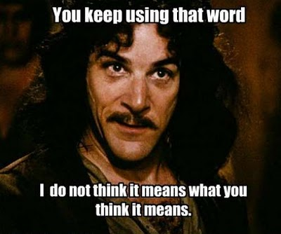
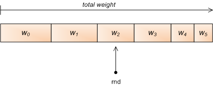
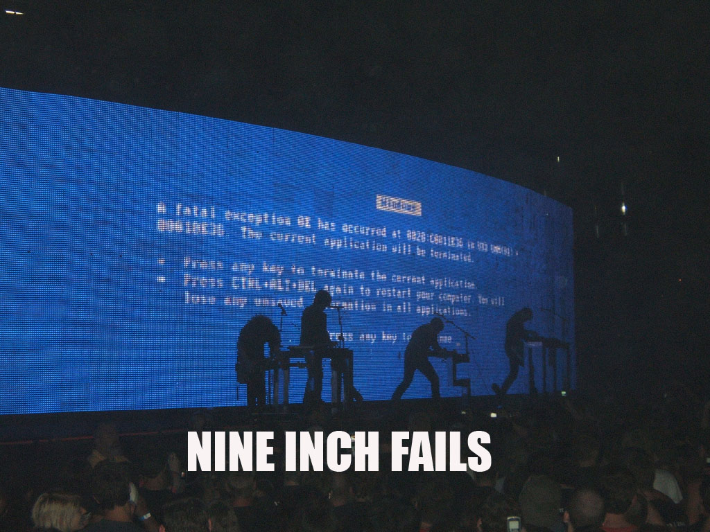

if we_guessed_correctly():
best_guess.success += 1
else:
best_guess.success -= 1
best_guess.save()
Use whichever guess is the most successful "in the wild". When a guess fails, reduce its fitness, allowing another best guess to possibly arise. The visitor has to let us know if we were correct.
nodes is a frequency chart. If 200 appears twice, nodes[200] == 2. The strongest node wins. It's the mode average of the knowledge set. It's just another averaging function!
This can get really complicated...
K-Means Clustering
combines means and neural network nodes
clusters inputs into k buckets identified by k different mean averages
infers the mean value of the bucket including or closest to the input
Bayes Classification
given some known probabilities, calculate some unknown probability, and infer from it
e.g. given the probability that a site visitor weighs 150+lbs. (P(150+)) and that a 150+lbs. site visitor is male (P(M|150+)), calculates the probability that a male visitor weighs 150+lbs. (P(150+|M))
Good news - the machine learning algorithms have already been written for you.
if we_guessed_correctly():
best_learning_algo.success += 1
else:
best_learning_algo.success -= 1
best_learning_algo.save()
It's the genetic algorithm applied to other learning algorithms. Implement all the learners, store them somewhere, and order them by how successful they are.
The "best"? The "most successful"?

A "Bestest" algorithm - a weighted random choice
from random import uniform
algos = { 'kmeans': 50, 'mean': 25, 'bayes': 20, 'neural': 5 }
needle = uniform(0, sum(algos.values()))
for name in sorted(algos, key=algos.get):
needle -= algos[name]
if needle <= 0:
break
# return name

FAIL! All weights must be > 0 for that to work.
success = max(0, success - 1)

The algorithms may be free or cloud-cheap, but the data isn't.Stop worrying about algorithms. It's the data, stupid!
There are two types of data
Content
Collaborative
Content Data
E-Commerce
price
color
size
Music
genre
beats-per-minute
tempo
Site pages
main keywords
length
It's data that describes the content on your site. When two pieces of content are similar, we infer a user who likes one will also like the other.
Collaborative Data
gender
age
location
favorite content
friends
It's data describing the visitors to your site. When two visitors are similar, we infer that they'll like the same stuff.
"Numerification"
Data needs to be numerical so you can do math on it.
gender: { 'male': 0, 'female': 1, 'other': 2}
employed: { 'false': 0, 'true': 1}
When possible, "numerification" should be meaningful. Labels that are related map to numbers that are closer.
score = numpy.linalg.norm(person1 - person2)
# score is approx 5
In numpy, the distance between the two points is the norm of the vector between those points. You may remember it better as the Euclidean distance as given by the Pythagorean theorem.
PerformanceMachine learning is a "big data" problem. Learn how those guys solve these kinds of problems.
(Hints: MapReduce - I called it "reduction" for a reason, Apache Pig, Apache Hadoop, etc.)
The Performance Problem
Say your website has 1 million songs. Imagine a grid with 106 rows and 106 columns. How many pairwise comparisons does that produce?
106 * 106 = 1012 (1 trillion*!)
*actually more like half a trillion if you ignore A vs. A and assume (A vs. B) = (B vs. A), but still...
Now add a collaborative analysis: every user is compared to every other user. More input!
The Performance Problem
How long does it take to calculate all those scores?
How many numbers make up each song's "DNA"?
Where do you store the results?
Hey database guy! You got room for 1 trillion rows lying around somewhere?
How quickly can you lookup a result at runtime?
e.g. Generate the top 5 most similar songs.
How often do you need to update your library?
e.g. If you update weekly, but it takes two weeks to structure and reduce the data, you'll never catch up.
A Common Performance Solution - Clustering
Cluster the songs so that similar songs get grouped together. All songs in the same cluster are equally similar to each other.
e.g. If you have 1 million songs, group them into chunks of 100 songs each, leaving 10,000 song-clusters.
Algorithm options:
hierarchical
k-means
self-organizing maps
Clustering Benefits
Storage: You only have to store 10,000 cluster ids instead of 1 trillion sim scores.
Lookup: To find the songs most similar to any given song, randomly select other songs from the same cluster.
Updates: Calculate "average DNAs" for each cluster. Place the new song in the cluster whose average DNA is closest. For the 1,000,001st song, that's 10,000 comparisons instead of 1 million.